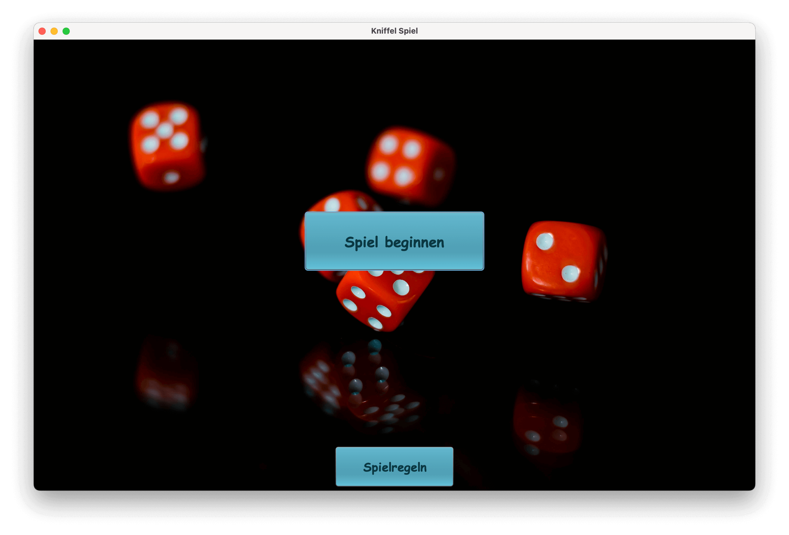

Kniffelspiel in Java
Dieses Projekt ist ein Java-basiertes Spiel namens Kniffel. Es wurde entwickelt, um die grundlegenden Konzepte der objektorientierten Programmierung zu erlernen und anzuwenden. Das Spiel ermöglicht es den Benutzern, Würfel zu rollen und verschiedene Kombinationen zu erzielen, ähnlich wie beim traditionellen Kniffel-Spiel.
